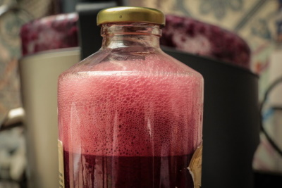

-
Suco Mix
Ingredientes
. 1 copo de água mineral
. 1 talo de aipo
. 1/2 beterraba
. 3 cenouras
. 1 maçã vermelha
. 1 colher (sobremesa) de salsa picada
. 1 colher (sopa) de grão de trigo
Modo de Preparo
Descasque e rale as cenouras a beterraba.
Peque a maçã com cascas e retire as sementes.
Coloque todos os Ingredientes na centrífuga acrescentando água aos poucos, por fim coe e consuma imediatamente (Sucos e Saladas)